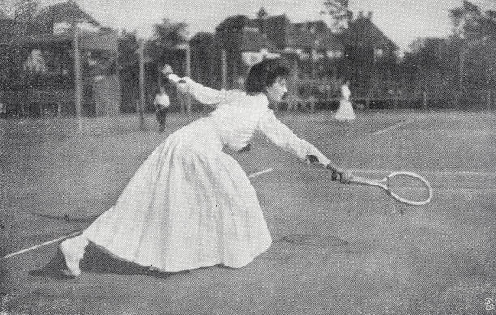
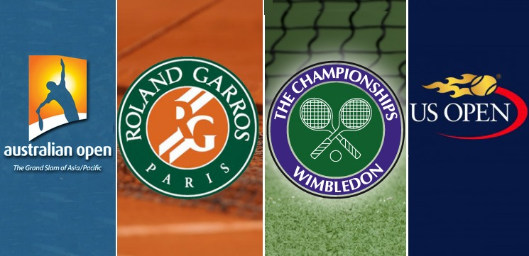

🎾 L'Histoire du Tennis
🕰️ Les Origines : Le Jeu de Paume

Le tennis moderne trouve ses racines dans le jeu de paume, pratiqué en France dès le XIIe siècle. À l’époque, les joueurs utilisaient la paume de leur main pour frapper la balle, avant l’apparition de la raquette.
🎩 Le Tennis Moderne : Naissance en Angleterre
En 1873, le major britannique Walter Clopton Wingfield codifie un jeu appelé “Sphairistikè”, ancêtre du tennis actuel. Le sport se popularise rapidement en Angleterre, notamment grâce au premier tournoi de Wimbledon en 1877.
🌍 L’Expansion Internationale
Le tennis se répand à travers le monde au début du XXe siècle. Les grands tournois comme Roland-Garros, l’US Open et l’Australian Open viennent compléter Wimbledon pour former les célèbres Grands Chelems.
⭐ Le Tennis Aujourd’hui
Le tennis est aujourd’hui un sport mondialement pratiqué, symbole d’élégance et de performance. Les légendes comme Roger Federer, Rafael Nadal et Serena Williams ont marqué l’histoire par leur talent et leur longévité.